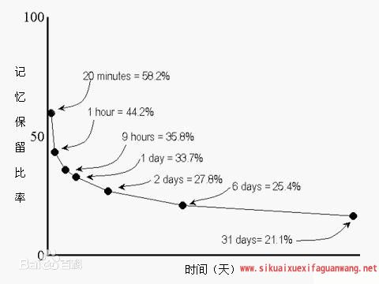
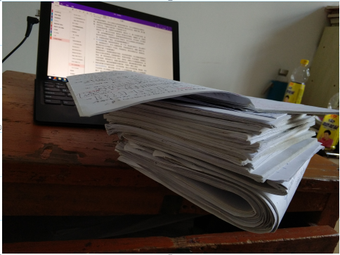

应试教育经验总结
作为一名普通得不能再普通的学生，在成长的过程中一定有数不清的考试经历。在经历了大大小小的那么多考试后，我觉得我应该总结点什么。
原因有二：
-
希望万*鑫看到这篇文章后，能有所收获，掌握正确的学习方法，少走弯路
-
明年研究生毕业后，我可能再也不会经历比较大型的考试了，这个总结是对我学生生涯应试教育的一个交代
该篇总结分为如下几个部分：
- 为什么要学习：应试教育的重要性
- 如何学习：学习方法总结
- 关于中考：战略上藐视，战术上重视
应试教育的重要性：为什么要学习
首先抛结论：应试教育是基于当下国情的最公平的选拔人才的手段，也是寒门学子改变命运的快速通道。
之所以说是快速通道，是因为对懂得学习方法的人来说，学习是一件最容易的事情。只要掌握了学习的诀窍，就可以利用应试教育改变命运。所以，古人说，书中自有黄金屋，书中自有颜如玉。
我们学的知识，背的课文，到底有没有用？
很多学生讨厌应试教育，讨厌背古诗，讨厌背英语，背历史，背政治，觉得这些知识一点用处都没有。首先这种观点就是有问题的。我能理解大多数中学生为什么觉得鲁迅的文章是枯燥无味的，因为他们还没有很深的阅历。当你随着年龄的增长，经历过人情冷暖，悲欢离合，你再回头看一看鲁迅的文章，才能发现他的话是多么的一阵见血。这里引用知乎上的一个问题和回答：小孩子不懂古诗，为什么还要背古诗？
为了在他长大后，有一天看到黄昏美景时脱口而出的是“落霞与孤鹜齐飞，秋水共长天一色”，而不只是“我X，好牛X”；
看到明月时脱口而出的是“举杯邀明月，对影成三人”，而不只是“哇，这月亮好美”；
遇到下雨脱口而出的是“落花人独立，微雨燕双飞”，而不只是“我去，下雨了”；
与朋友喝酒时脱口而出的是“人生得意须尽欢，莫使金樽空对月”，而不只是“满上满上”“干”“别养鱼”“老子喝死你”；
看到美女时自然浮想出的是：“清水出芙蓉，天然去雕饰”、“肌肤若冰雪，淖约若处子”，而不只是满脑子的“小姐姐，颜值舔屏”。
应试教育是一个改变命运的捷径
退一万步讲，就算你现在不懂得这些道理，但是有一个道理你应该很清楚，如果你想出人头地，你想改变自己的命运，你想实现自己的梦想，那么应试教育就是你的工具，而且是捷径！
人并不是生而公平的。从出生的那一刻起，就是不公平的。你可能会羡慕，为什么别人家的父母这么有钱，为什么别人可以用这么好的手机，这虽然不公平，但是确是事实。我们不能选择自己的出身，但是可以自己走出自己的未来。未来你也会组建家庭，你也会为人父母，你不想给自己的孩子一个更好的起点吗？
学生时代，你可能发现，你和同学之间的差距，并不是很明显。你身边的同学都是每天穿着和你一样的校服，每天和你一样上下课，上学放学。但是到了你工作的时候，你可能会发现，这个社会上，有各种各样的不公平。例如，你中学时候成绩倒数的同桌，毕业后凭借关系进入了某个大型国企，父母还给他在大城市买车买房，而你却只能在大城市靠租房。如果你不能在学生时代和大多数人拉开差距，那么等你毕业工作的时候，你会发现，你和被人的差距会越来越大。
人生也是相对公平的。大多数人出生下来后，身体都是健全的，智力发育都是没有问题的，都是两个肩膀抗一个脑袋。这就是你奋斗的资本。有钱人家的孩子再有钱，也不可能有两个脑袋四条腿。父母只会陪你走人生的一小段路，剩下大部分的路，需要自己去走。与其羡慕别人的父母，不如去用自己健全的身体，靠自己的奋斗，去实现自己人生的价值（奋斗并不是为了和别人攀比，而是让人生活的有价值）。虽然你的父母不能在大城市给你买车买房，但是你可以通过努力学习，考进一所国内顶尖的 985 高校，大学毕业后年薪 30 万，虽然你可能需要自己暂时租房子，但是你可以凭借自己的努力，几年赚到一栋房子的首付，在大城市通过自己的努力扎根，等你有了下一代，你可以自豪和他们说，你老子当年自己只身一人来到大城市，白手起家，在大城市扎了根。
这一切的一切，都可以通过学习，通过应试教育的捷径来实现，也就是说，你梦想的未来，是应试教育给你带来的，是你自己努力学习，努力奋斗带来的。
所以，退一万步说，就算当前的你，觉得应试教育再枯燥，再没有意义，你都应该利用好这个途径，实现自己人生的价值。况且，应试教育，也并不是无用的知识，所有的科目，所有的知识，都是有价值的，只是你还没有体会到。
如何学习：学习方法总结
最重要的能力：在老师的引导下，独立思考，主动学习的能力。
我觉得当下中国应试教育最大的弊端，就是没有教会学生如何独立的思考，大多数老师都是在进行填鸭式教育，当然这并不是老师的问题，这是教育体制的问题。每一个老师，不管授课能力如何，都是值得尊敬的老师。我们不能因为一个老师上课讲的不好，或者一个老师不喜欢我，就对一门科目产生厌恶的情绪。老师讲的不好是老师的事情，但是分数是自己的啊。
独立思考的能力是非常重要的。什么是独立思考的能力，独立思考的能力，体现在你们学生身上，就是总结错题的能力，是举一反三地能力，是主动学习地能力。我们知道，一个题目，其要考察的知识点，本质上就是书本上地那些知识点，再难的题目，也只是书上的知识点的组合考察。只要把书本上的知识点吃透了，遇到题目就能看清这个题目的。
学习是有章法的，有很多道理是显而易见而且十分有效的。有效的学习方法，是成功的一半。我们的班级里面，肯定有一些同学，学习比谁都勤奋，但是分数就是考不高，这是学习方法出现了问题。同样的道理，为什么很多知识点我都忘记了，当时当我拿到一个数学题的时候，我还是会做，答案很简单：我有自己的一套学习经验。
主动学习：预习的重要性
一件事情，你主动想做，和被动地去做，有本质地区别。学习也是如此，被老师进行填鸭式教学，和自己预习完后，带着问题听讲，有本质的区别。你应该能有所体会，提前对书本的知识点进行预习，做老师发下来的预习题，在做题的过程中，遇到不懂的问题，第二天你肯定会认真听老师如何解答，然后你脑子里就会留下很深的影响。
很多道理，都是老师反复强调过的，例如上课前要认真预习课本，下课后要认真复习，这都是真理，只是大多数人都把这些道理当作耳旁风。
再提一下复习，复习和预习同样重要。艾兵浩斯遗忘曲线告诉我们，人的记忆，在经过 20min 后就会衰减 50%，也就是说，你上课听到的知识，如果不及时复习，那么就会遗忘的特别快。这个反复被人验证过的道理，却被大多数人忽视。

课堂认真听讲的重要性
首先抛一个结论：上课不认真听讲，课后花再多的时间也补不回来。
我们的班级里面，肯定有过这样的人：学习很努力，比谁都努力，但是就是成绩上不去。这些人并不是笨，实际上大多数人的智商都是差不多的，只是他们的学习方法出了问题。老师每一次讲课，都是认真备课的，老师们的所有时间，基本上都花在了备课上，因为这是面向所有同学的授课。如果上课不认真听讲，企图通过课后补课的方式，来弥补，那只是亡羊补牢，老师们在补课的时候讲的课，以及大家听课后的效果，是绝对比不上课堂上的结果的。
总结的重要性
前面我说过，学习最重要的就是不断地总结，先总结核心知识，然后从核心知识延申出枝叶。需要总结的东西很多，数学的错题，英语的错题，英语的优秀句型，政治的答题模板，很多东西，自己总结出来了印象就会非常深刻，而如果是被动的接受老师灌进来的东西，那么效果肯定不如自己总结的好。特别是数学的错题，总结的多了，就知道某个类型的题目，坑在什么地方，有几种解法。注意：自己总结出来的知识，自己主动学习出来的知识，才是自己的，老师交给你的知识，你不吸收，那还是老师的。

上图是我考研期间总结的各种错题，以及各种经验的积累，这都是我思考的结果，只属于我的思考的结果，思考的时间决定了你的复习效率，而不是你的复习时间。自己主动思考、总结出来的知识，才是最好的，别人的就算总结的再好，替代不了你思考的过程。别人思考出来了再告诉你，就像嚼好了饭再喂给你一样，营养肯定不如自己总结来的多。
你现在距离考试还有半个月的时间，这半个月，你应该把绝大部分的时间，花在总结上（一定要总结出属于自己的感悟），尤其是总结理工科目的错题。当然，还要做一些新的题型，保持做题的手感。不要小看这半个月，半个月的时间，只要学习方法得到，那么效果会突飞猛进，因为总结会带来进一步的提升，这段时间可以是量变引起质量的时间。
关于中考：战略上藐视，战术上重视
战略上藐视
关于中考，我想说的是，没有人去逼你一定要去考上省赣中，我也不想你这么年轻，就那么累。对于这场考试，你要从战略上藐视他，因为他是一次很好的机会（一个捷径），让你离你的梦想更进一步。进了省赣中，你将接触一流的老师，与全市一流的学生做同学。省赣中三年的磨练，让我受益一生。
我觉得最好的心态，是你主动的想去考进赣中（主动思考），而不是被人逼着去做这件事情。
当然，你也不要有太大的压力。优秀的人，去哪里都是优秀的。即使你考不进赣中，只要你一直严格要求自己，也总能实现自己的梦想，但是这条路明显比考上省赣中更加曲折。这也是我为什么反复强调：应试教育、应试考试是一个成功的捷径，你不应该反感他，而应该感谢这个捷径给了你一个证明自己的机会。所以，你已经知道了应试教育的本质，你应该从战略上藐视他，应试教育不过如此。当然，每个人都有失败的时候，胜败乃兵家常事，所以你也不必要有什么压力，我中考高考都失利了，后来的情况你可知道了，我在大学里，付出了太多的努力，去追赶别人，最后才勉强和其他优秀的人，站在同一个舞台上，未来还有很长的路要做，一次失败没什么，能爬起来，总结经验，就是好样的。
战术上重视
虽然我说应该在战略上藐视这场考试，但是我们应该在战术上重视这场应试教育，他给了你一个极好的机会，让你走上一条更好的道路。我们要重视自己的学习方法，重视自己的备考策略，不能在这个时候骄傲自满，觉得自己能考上了，就放松了。考试，最忌骄傲自满，大意失荆州。考试最可惜的，就是会做的题目做错了，我之前说过，只要会做的题目全部做对，就一定是高分。
Summary
最后这段时间，你应该戒骄戒躁，认真总结做题经验，抓复习重点，然后平稳的走完这次考试，我不期待你有什么超常的发挥，我只希望你能够正常发挥出自己的实力即可。
祝万*鑫好运！